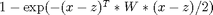

lossSat.m
Summary: Compute expectation and variance of a saturating cost  and their derivatives, where x ~ N(m,S), z is a (target state), and W is a weighting matrix
function [L, dLdm, dLds, S, dSdm, dSds, C, dCdm, dCds] = lossSat(cost, m, s)
Input arguments:
cost .z: target state [D x 1] .W: weight matrix [D x D] m mean of input distribution [D x 1] s covariance matrix of input distribution [D x D]
Output arguments:
L expected loss [1 x 1 ] dLdm derivative of L wrt input mean [1 x D ] dLds derivative of L wrt input covariance [1 x D^2] S variance of loss [1 x 1 ] dSdm derivative of S wrt input mean [1 x D ] dSds derivative of S wrt input covariance [1 x D^2] C inv(S) times input-output covariance [D x 1 ] dCdm derivative of C wrt input mean [D x D ] dCds derivative of C wrt input covariance [D x D^2]
Copyright (C) 2008-2013 by Marc Deisenroth, Andrew McHutchon, Joe Hall, and Carl Edward Rasmussen.
Last modified: 2013-05-28
Contents
High-Level Steps
- Expected cost
- Variance of cost
- inv(s)*cov(x,L)
function [L, dLdm, dLds, S, dSdm, dSds, C, dCdm, dCds] = lossSat(cost, m, s)
Code
% some precomputations D = length(m); % get state dimension % set some defaults if necessary if isfield(cost,'W'); W = cost.W; else W = eye(D); end if isfield(cost,'z'); z = cost.z; else z = zeros(D,1); end SW = s*W; iSpW = W/(eye(D)+SW); % 1. Expected cost L = -exp(-(m-z)'*iSpW*(m-z)/2)/sqrt(det(eye(D)+SW)); % in interval [-1,0] % 1a. derivatives of expected cost if nargout > 1 dLdm = -L*(m-z)'*iSpW; % wrt input mean dLds = L*(iSpW*(m-z)*(m-z)'-eye(D))*iSpW/2; % wrt input covariance matrix end % 2. Variance of cost if nargout > 3 i2SpW = W/(eye(D)+2*SW); r2 = exp(-(m-z)'*i2SpW*(m-z))/sqrt(det(eye(D)+2*SW)); S = r2 - L^2; if S < 1e-12; S=0; end % for numerical reasons end % 2a. derivatives of variance of cost if nargout > 4 % wrt input mean dSdm = -2*r2*(m-z)'*i2SpW-2*L*dLdm; % wrt input covariance matrix dSds = r2*(2*i2SpW*(m-z)*(m-z)'-eye(D))*i2SpW-2*L*dLds; end % 3. inv(s)*cov(x,L) if nargout > 6 t = W*z - iSpW*(SW*z+m); C = L*t; dCdm = t*dLdm - L*iSpW; dCds = -L*(bsxfun(@times,iSpW,permute(t,[3,2,1])) + ... bsxfun(@times,permute(iSpW,[1,3,2]),t'))/2; dCds = bsxfun(@times,t,dLds(:)') + reshape(dCds,D,D^2); end L = 1+L; % bring cost to the interval [0,1]